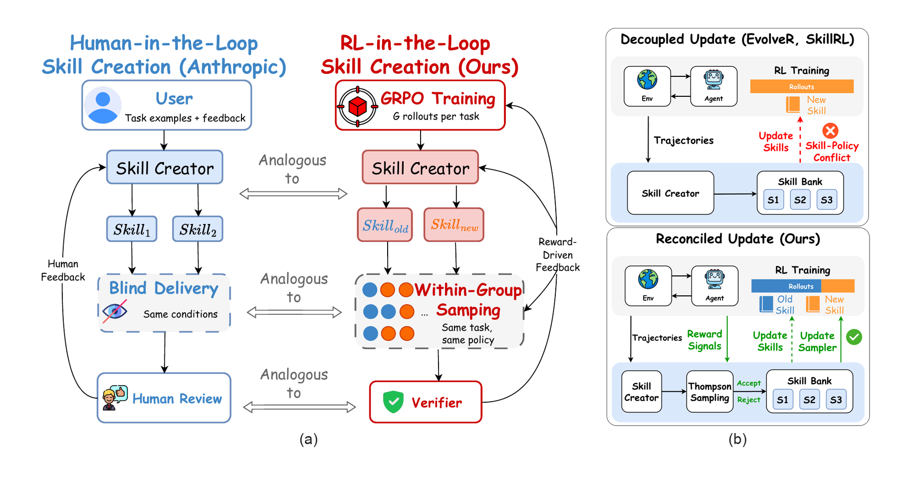
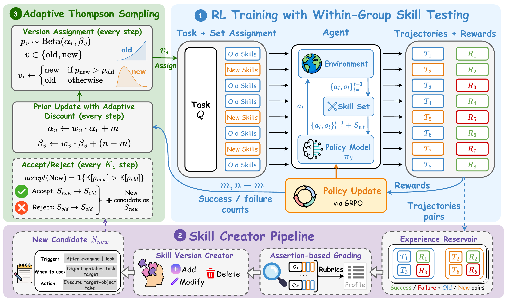
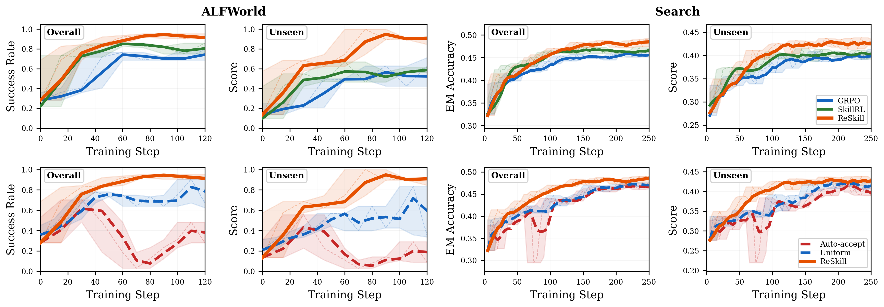
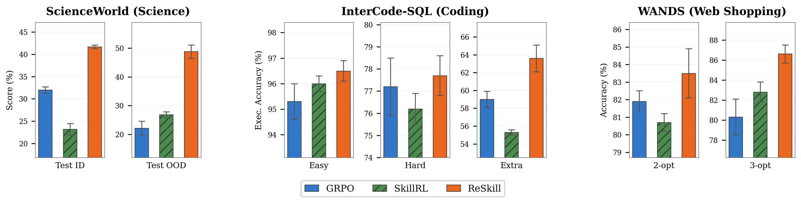
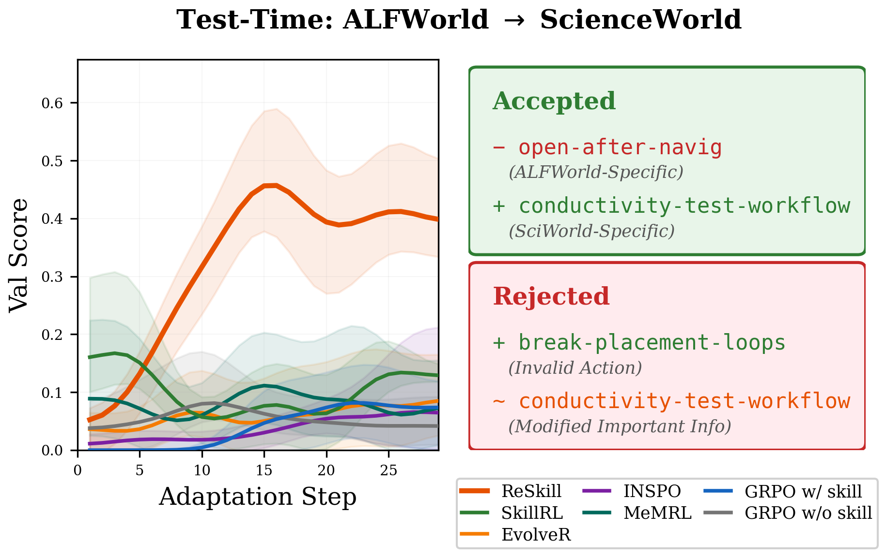
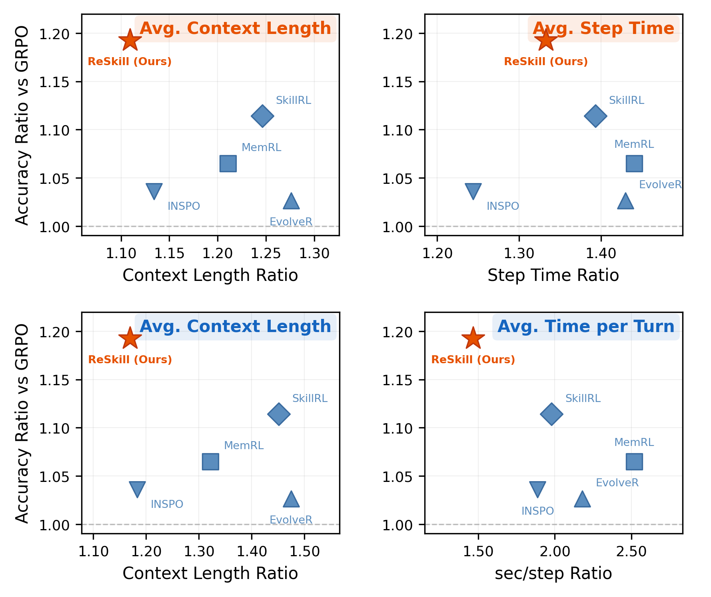
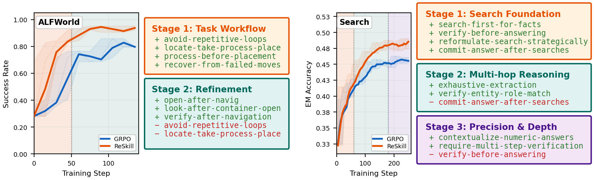

RL training with per-turn skill loading
veRL handles distributed RL. ReSkill adds skill-conditioned multi-turn rollouts, loading only the active skill guidance needed for the current turn.
Agentic RL with skill co-evolution
ReSkill turns skill creation into an RL-in-the-loop process. During policy optimization, it diagnoses rollout failures, proposes skill revisions, tests competing skill versions inside GRPO groups, and keeps the versions that best support the evolving policy.
Overview

Core idea
veRL handles distributed RL. ReSkill adds skill-conditioned multi-turn rollouts, loading only the active skill guidance needed for the current turn.
Rollout experience becomes feedback for diagnosing failures, revising skill triggers, and proposing add, modify, or delete operations during training.
Competing skill banks are tested within GRPO rollout groups. Thompson Sampling controls which versions are explored, accepted, rejected, or pruned.

Results

Main evaluation
Switch benchmark and model scale for the compact view. Expand any row to inspect the full seen/unseen task breakdown.



Skill evolution
ReSkill tracks skill versions over training rather than treating a skill bank as fixed context. Accepted operations tend to become shorter, more conditional, and more aligned with the action space as the policy improves.

Codebase
ReSkill is an easy-to-configure, extensible veRL extension that brings Anthropic-style skill creation into agentic RL training. It provides control over skill versioning, sampling, bundle testing, and customizable skill-policy co-evolution.
The codebase is under active development as we continue to improve integration, customization, and supported environments.
If ReSkill is useful to your work, please consider starring the repository ⭐